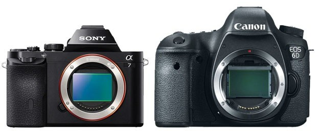

Let's start here !
As a beginner in photography, you will have to learn properly from the beginning. You will need a camera with complete manual controls. A good camera to use would be a DSLR or mirrorless camera.
Difference between DSLR and mirrorless cameras
"DSLR" is the abbreviation for "Digital Single Lens Reflex." A DSLR is a digital camera that uses a mirror mechanism to either reflect light from a camera lens to an optical viewfinder (which is an eyepiece on the back of the camera that
one
looks through to see what they are photographing). It also allow light to pass fully onto the image sensor (which captures the image) by moving the mirror out of the way. While a DSLR camera employs a mirror system to either reflect light
into an optical viewfinder or transmit it directly to the camera sensor.
A mirrorless camera (thus the name) does not. This means that all light travelling through the lens ends up on the image sensor. Because an optical viewfinder (OVF) no
longer reflects light, mirrorless cameras rely on electronic viewfinders (EVFs) and LCDs to present what the imaging sensor sees. When compared to DSLR cameras, mirrorless cameras are simpler, lighter, and less bulky due to the lack of a
mirror system and an optical viewfinder.
The three most important setting is shutter speed, ISO, and aperture
Shutter speed is in charge of two things: adjusting the brightness of your photograph. The shutter speed of a camera will rate at which the shutter closes. A rapid shutter speed results in a shorter exposure( the amount of light the camera collects) whereas a slow shutter speed results in a longer exposure. The shutter speed will also create dramatic effects by either freezing or blurring motion.
The sensitivity to light of your camera, whether it's on film or a digital sensor, is measured in ISO. A lower ISO value indicates that the camera is less sensitive to light, whereas a higher ISO indicates that the camera is more sensitive to light.
The aperture also known as the “focal ratio” is the opening of a lens's diaphragm through which light flows. Lower f/stops signify larger apertures, whereas higher f/stops represent smaller apertures and provide less exposure.